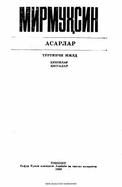

GOMirmuhsinning hayotiy va ta'sirli qissa hamda hikoyalardan iborat to'rtinchi jildi.
Ushbu asarda muallif Mirmuhsinning hikoya va qissalari jamlangan bo'lib, inson taqdiri, jamiyatdagi turli kechinmalar va hayotiy voqealar tasvirlangan. To'rtinchi jildga kiritilgan asarlar o'zbek adabiyotining yorqin namunalaridan biri hisoblanadi.